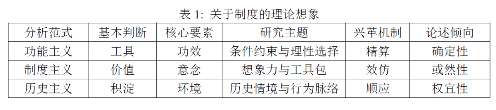

收录于合集 #国家建构与国家发展 70个
作者简介： 冯仕政，社会学博士，中国人民大学社会与人口学院教授、院长，教育部青年“长江学者”。他的主要研究方向是政治社会学、组织社会学、社会分层与流动、集体行为与社会运动，已出版专著《西方社会运动理论研究》（2013年）《当代中国的社会治理与政治秩序》（2013年）《再分配体制的再生——杰村的制度变迁》（2002年）等。
本次推送的是由中国人民大学社会与人口学院院长冯仕政教授所作的题为《制度竞争与国家构建：以信访体制的演变为例》的报告。
制度创设是国家构建最重要的任务和环节之一，影响着国家治理体系与治理能力现代化的建设，制度创设的成效有高有低，有好有坏。目前在社会学界，关于制度的理论想象主要有三种分析范式：功能主义、制度主义和历史主义，可以总结成下表1。

冯老师认为，以上三种分析范式都存在缺陷。功能主义强调理性选择，然而无论“理性”还是“选择”都是继发性的，许多时候并不存在最优解和均衡的问题，偏好也是不断演化的，并不是给定的，许多制度在源头上甚至是衍生品。因为“理性选择”不是一个坐在屋子里开脑洞和演算的过程，而是一个不断试错和迭代的现实过程，随时都会产生不可逆的后果。制度也不完全是一种价值和凭空的想象，而是在行动中逐渐接触、接受和调整的产物。而在第三种分析范式历史主义中，历史不仅仅是一个脉络，更重要的是一个过程，脱离行动历史就无法生成。
在此批判的基础上，冯老师提出了一个关于制度的行动主义视角，把制度定义为一种“模式化的行动系统”，认为“制度化”的本质是企图把行动流梳理为行动链。其关键词有三个：递推、张力和序列。“递推”的意思是，制度的兴革是一个在目的的牵引和条件的制约下不断往前蠕动的过程，中间充满纠结、折腾和挣扎。在这其中，偏好和条件都是不断创设和变化的，动机和条件都是继发性的。“张力”则表明制度创设过程总是充满张力，正是张力推动着制度不断地被创设。“序列”则意味着，任何选择都会产生一个后果，从而积淀为历史，构成后续选择的条件和基础，制约或引导着后续的选择。
随后，在行动主义视角下，冯老师主要考察了信访体制的演变。中国信访体制发端于1951年政务院发布的《关于处理人民来信和接见人民工作的决定》，其后的发展可以主要分为三个阶段：创立探索阶段（1951-1978）、恢复发展阶段（1978-2007）、统合重塑阶段（2007—）。在创立探索阶段有三个重要历史节点：“五一决定”、“五七指示”和“六三通知”。“五一决定”即1951年政务院发布的《关于处理人民来信和接见人民工作的决定》，第一次正式把信访制度提上国家政权建设日程，是新中国信访制度的历史起点。在该决定的推动下，各地开始把信访制度作为一项国家制度来建设。“五七指示”即1957年国务院发布的《关于加强处理人民来信和接待人民来访工作的指示》，在国际共运危机和整风运动的背景下，该指示把信访工作作为整顿干部作风、调节人民内部矛盾的重要抓手和途径，其意义是从政治原则、组织制度和工作方法等多个方面完善了信访工作。“六三通知”即1963年国务院发布的《关于加强人民来信来访工作的通知》，提出了“多办少转”、“归口管理”等原则，力图使信访工作更加系统、明确和规范。然而，“六三通知”的很多设想和规定在“文革”中被束之高阁，直到改革开放以后才发扬光大。在信访体制的恢复发展阶段，也有4个重要的历史节点，分别是（1）1978年9月的“二次全会”；（2）1982年第三次全国信访工作会议颁布的《党政机关信访工作暂行条例（草案）（简称“八二条例”），该条例宣告拨乱反正工作全面完成，并以法规的形式肯定下来，开创了信访工作法制化的新方向；（3）“九五条例”，提出“信访人”的概念，法制导向更加清晰；（4）“零五条例”，用属地管理原则强化责任主体等。从内容中可以看出，“八二条例”、“九五条例”和“零五条例”之间是递进的关系。在信访体制的统合重塑阶段，关键的历史节点是2007年国务院发布的《关于进一步加强新时期信访工作的意见》，该意见力图打破部门界限，重新统合客观上相对分散和分割的信访体制，建立处理信访突出问题及群体性事件联席会议制度。
在此基础上，冯老师对信访制度的演变过程进行了几点总结。首先，制度创设有时候并不是必然的，它可能是一种偶然的产物，比如1951年毛泽东主席的批示以及“五一决定”。其次，通过考察发现，国家与社会之间的矛盾是信访制度中存在的主要矛盾。总的来说，国家主导者信访制度建设，但是受到社会选择的制约。具体分阶段来看，在1953年至1978年，国家的动员需要与民众的利益追求严重对立。虽然国家迅速确立了信访制度，但它日益脱离社会实际，最终遭遇严重挫折。1978年至2007年，由于难以有效解决民众的利益诉求，同时将信访工作纳入法制轨道以利于社会管理的愿望十分强烈，1978年后国家的社会管理取向主导了信访制度的建设。信访制度基本满足社会需求，信访法制化建设稳步推进，但随着人民的政治参与不断扩大，信访制度正在落后于形势变化。2007年后，国家的社会管理取向与人民利益诉求和不断扩大的政治参与之间的矛盾成为了主要矛盾。最后，信访制度的演变过程很好地说明了用行动主义视角来分析制度创设的合理性。
撰文：施 榕
审读：杨端程
编辑：吴温泉


政文观止
微信扫一扫赞赏作者 __赞赏
已喜欢，对作者说句悄悄话
取消 __
发送给作者
发送
最多40字，当前共字
上一页 1/3 下一页
长按二维码向我转账
受苹果公司新规定影响，微信 iOS 版的赞赏功能被关闭，可通过二维码转账支持公众号。